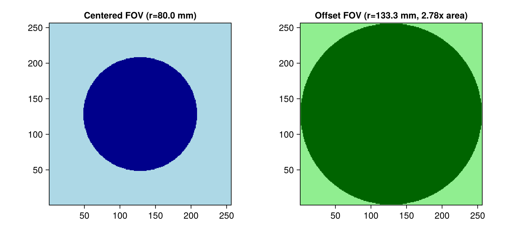
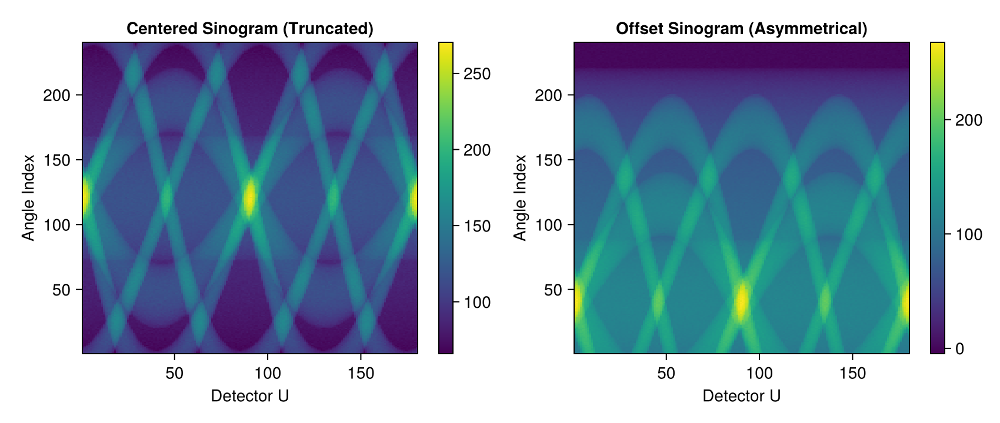
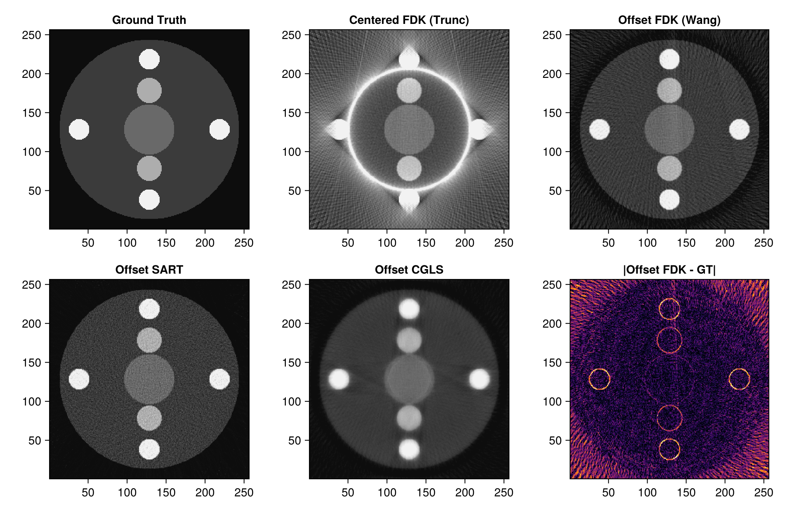
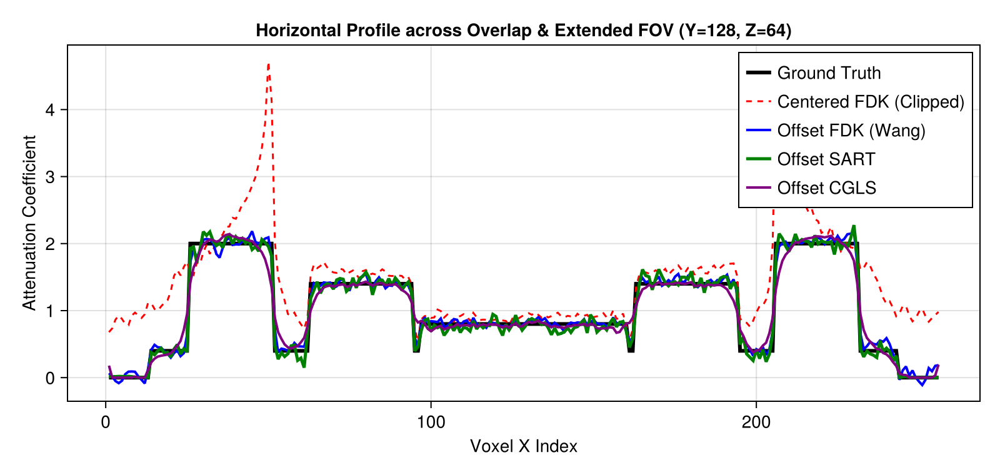

Offset Detector Geometry & Extended Field-of-View (FOV) Reconstruction in Tigre.jl
1. Physical Motivation: The Small Detector Dilemma
In medical Cone-Beam CT (CBCT) and industrial non-destructive testing (NDT), flat-panel X-ray detectors are among the most expensive components of a scanner:
- A standard centered detector has a lateral half-fan angle $\gamma_m = \arctan(w_{\text{det}} / (2 \cdot \text{DSD}))$, which limits the reconstructible cylindrical Field-of-View (FOV) radius to: $R_{\text{FOV, centered}} = \text{DSO} \cdot \sin(\gamma_m) \approx \text{DSO} \cdot \frac{w_{\text{det}}}{2 \cdot \text{DSD}}$
- When scanning patients with large lateral anatomy (e.g., adult pelvis, shoulders, thorax) or wide industrial workpieces, the anatomy overflows the detector, causing severe lateral truncation artifacts (bright cupping bands, streaking, and completely lost peripheral structures).
- Manufacturing a physical detector of twice the width is prohibitively expensive and technically challenging.
The Offset Detector Solution
Instead of centering the detector, the panel is shifted laterally along the detector $U$-axis by an offset $d_{\text{off}}$:
- The ray paths from the source now cover one side of the object completely, while the opposite side is covered when the gantry rotates by $180^\circ$.
- By acquiring a full $360^\circ$ rotation, the usable FOV radius is nearly doubled (FOV area expanded up to $\approx 4\times$) using the exact same detector panel!
Mathematical Redundancy & Wang Weighting
Because rays in the central overlapping region (where rays pass through both at angle $\theta$ and conjugate angle $\theta + \pi$) are measured twice, while rays in the peripheral extended region are measured only once:
- Standard FDK filtering would severely over-weight the central region and produce intense shading artifacts.
- Wang et al. (1996) introduced a smooth redundant weighting function $w(u)$ applied prior to ramp filtering and backprojection.
- Tigre.jl natively implements automatic Wang redundancy weighting and zero-padding (
_fdk_requires_wang(geo),wang_preweight!,wang_padding) wheneveroffDetector = [offU, offV]is specified!
What this Tutorial Covers:
- Configuring centered vs. offset detector geometries in
Tigre.Geometry. - Inspecting FOV radius expansion using
compute_fov_radiusandout_of_fov_mask. - Generating an oversized 3D phantom with central organs and peripheral lesions extending far beyond the centered FOV.
- Simulating cone-beam projections with realistic Poisson-Gaussian transmission noise (
add_ct_noise). - Reconstructing with Centered FDK (severe truncation baseline), Offset FDK (Wang-weighted), Offset SART (20 it), and Offset CGLS (20 it).
- Comparing horizontal profiles across the central overlap / extended peripheral transition zone.
Prerequisites
This tutorial uses Makie (recommended backend: CairoMakie) for visualization. If CairoMakie is not installed in your environment, add it by running using Pkg; Pkg.add("CairoMakie").
using LinearAlgebra
using Printf
using Random
using Statistics
using CairoMakie
using Tigre2. Geometry Setup: Centered vs. Offset Detector
We construct two matching scanner geometries:
geo_cent: Symmetrical detector centered on the optical axis (offDetector = [0.0, 0.0]).geo_offset: Asymmetrical detector shifted laterally along the horizontal $U$-axis by $25.0\,\text{mm}$ (offDetector = [25.0, 0.0]).
Notice how the detector pixel count ($240 \times 240$, pitch $1.0\,\text{mm}$) is identical in both setups!
# Full 360-degree rotation (required for offset detector conjugate coverage)
n_angles = 180
angles = collect(range(0.0f0, 2f0 * Float32(pi), length=n_angles))
# 1. Centered geometry (small FOV)
geo_cent = Geometry(
nVoxel = [256, 256, 128],
sVoxel = [256.0, 256.0, 128.0],
nDetector = [240, 240],
dDetector = [1.0, 1.0],
DSD = 600.0,
DSO = 400.0,
offDetector = [0.0, 0.0],
angles = angles
)
# 2. Offset detector geometry (extended FOV)
# We shift the detector laterally along U by 25 mm (leaving an 11 mm central overlap region)
off_u = 80.0
geo_offset = Geometry(
nVoxel = [256, 256, 128],
sVoxel = [256.0, 256.0, 128.0],
nDetector = [240, 240],
dDetector = [1.0, 1.0],
DSD = 600.0,
DSO = 400.0,
offDetector = [off_u, 0.0],
angles = angles
)
println("Geometries initialized successfully.")
Geometries initialized successfully.3. Quantifying Field-of-View Expansion
Tigre.jl provides helper functions compute_fov_radius(geo) and out_of_fov_mask(geo):
compute_fov_radius(geo)returns a tuple(radius_mm, radius_voxels)denoting the physical reconstructible cylinder radius in the transaxial slice.- Let us compare the reconstructible FOV radius and area between the centered and offset configurations.
r_cent_mm, r_cent_vox = compute_fov_radius(geo_cent)
r_off_mm, r_off_vox = compute_fov_radius(geo_offset)
mask_cent = out_of_fov_mask(geo_cent)
mask_off = out_of_fov_mask(geo_offset)
area_gain = (r_off_mm / r_cent_mm)^2
println(@sprintf("Centered FOV radius: %.1f mm (%.1f voxels)", r_cent_mm, r_cent_vox))
println(@sprintf("Offset FOV radius: %.1f mm (%.1f voxels)", r_off_mm, r_off_vox))
println(@sprintf("Reconstructible FOV area expansion: %.2fx", area_gain))
mid_z = 64
fig = Figure(size = (800, 360))
ax1 = Axis(fig[1, 1], title = @sprintf("Centered FOV (r=%.1f mm)", r_cent_mm), aspect = DataAspect())
heatmap!(ax1, mask_cent[:, :, mid_z]', colormap = :blues)
ax2 = Axis(fig[1, 2], title = @sprintf("Offset FOV (r=%.1f mm, %.2fx area)", r_off_mm, area_gain), aspect = DataAspect())
heatmap!(ax2, mask_off[:, :, mid_z]', colormap = :greens)
fig
Centered FOV radius: 80.0 mm (80.0 voxels)
Offset FOV radius: 133.3 mm (127.5 voxels)
Reconstructible FOV area expansion: 2.78x
4. Ground Truth Large Phantom Design
We construct a 3D phantom specifically designed to demonstrate truncation vs. full FOV recovery:
- Body cylinder of radius $36\,\text{mm}$ (voxel grid $80 \times 80$, voxel pitch $1.0\,\text{mm}$).
- In
geo_cent, the detector half-width is $36\,\text{mm}$, so at magnification $600/400 = 1.5$, the maximum visible object radius is $36 / 1.5 = 80.0\,\text{mm}$. - The phantom has radius $36\,\text{mm}$, which completely overflows the centered detector!
- In
- Central feature: Soft-tissue core with medium attenuation ($\mu = 0.8$).
- Intermediate features: Two circular structures ($\mu = 1.4$) at radius $16\,\text{mm}$.
- Peripheral features: Four outer high-contrast targets ($\mu = 2.0$) at radius $28\,\text{mm}$—lying completely outside the centered FOV, but safely inside the offset detector FOV!
nx, ny, nz = 256, 256, 128
phantom = zeros(Float32, nx, ny, nz)
cx, cy = 128.5, 128.5
for k in 20:108, j in 1:ny, i in 1:nx
r = sqrt((i - cx)^2 + (j - cy)^2)
# Outer body (radius 115 mm, scaled from 36 mm)
if r <= 115.0
phantom[i, j, k] = 0.4f0
end
# Central core
if r <= 32.0
phantom[i, j, k] = 0.8f0
end
# Intermediate lesions (radius 50 mm, within centered FOV)
if sqrt((i - (cx - 50))^2 + (j - cy)^2) <= 16.0
phantom[i, j, k] = 1.4f0
end
if sqrt((i - (cx + 50))^2 + (j - cy)^2) <= 16.0
phantom[i, j, k] = 1.4f0
end
# Peripheral lesions (radius 90 mm, TRUNCATED in centered detector!)
if sqrt((i - cx)^2 + (j - (cy - 90))^2) <= 13.0
phantom[i, j, k] = 2.0f0
end
if sqrt((i - cx)^2 + (j - (cy + 90))^2) <= 13.0
phantom[i, j, k] = 2.0f0
end
if sqrt((i - (cx - 90))^2 + (j - cy)^2) <= 13.0
phantom[i, j, k] = 2.0f0
end
if sqrt((i - (cx + 90))^2 + (j - cy)^2) <= 13.0
phantom[i, j, k] = 2.0f0
end
end
println("Oversized 3D Phantom constructed. Max value: ", maximum(phantom))
Oversized 3D Phantom constructed. Max value: 2.05. Forward Projection & Realistic CT Transmission Noise
We project the large phantom onto both detector configurations using forward projection Ax:
- In the centered sinogram, peripheral rays are abruptly cut off at both detector edges.
- In the offset sinogram, rays on one side extend smoothly across the entire body radius, while the opposing side captures the conjugate views.
- We then add realistic Poisson photon counting noise ($I_0 = 50,000$) and Gaussian electronic readout noise using
add_ct_noise.
# Forward projection
proj_cent_clean = Ax(phantom, geo_cent)
proj_off_clean = Ax(phantom, geo_offset)
# Add CT transmission noise
rng = MersenneTwister(1234)
proj_cent_noisy = add_ct_noise(proj_cent_clean; I0=50000.0, gaussian=(0f0, 0.5f0), rng=rng)
proj_off_noisy = add_ct_noise(proj_off_clean; I0=50000.0, gaussian=(0f0, 0.5f0), rng=rng)
# Visualize central detector slice sinograms
mid_v = 120
fig = Figure(size = (850, 360))
ax1 = Axis(fig[1, 1], title = "Centered Sinogram (Truncated)", xlabel = "Detector U", ylabel = "Angle Index")
hm1 = heatmap!(ax1, proj_cent_noisy[:, mid_v, :]', colormap = :viridis)
Colorbar(fig[1, 2], hm1)
ax2 = Axis(fig[1, 3], title = "Offset Sinogram (Asymmetrical)", xlabel = "Detector U", ylabel = "Angle Index")
hm2 = heatmap!(ax2, proj_off_noisy[:, mid_v, :]', colormap = :viridis)
Colorbar(fig[1, 4], hm2)
fig
6. Reconstruction Benchmark
We run 4 reconstructions to contrast the algorithms:
- Centered FDK: Reconstructs the truncated projections directly. Ramp filtering of truncated edges creates massive cupping streaks and outer loss.
- Offset FDK (Wang Weighting):
Tigre.fdkautomatically detectsoffDetector[1] != 0, calculates smooth redundancy weights $w(u)$, mirrors and pads the detector arrays, and applies the ramp filter. - Offset SART (20 iterations): Algebraic reconstruction with ray-by-ray projection and backprojection, converging smoothly to the non-negative solution.
- Offset CGLS (20 iterations): Krylov conjugate gradient least squares solver iteratively matching the asymmetrical system matrix $A$.
All calculations execute natively on CUDA GPU.
println("--> 1/4 Reconstructing Centered FDK (Truncated Baseline)...")
rec_fdk_cent = fdk(proj_cent_noisy, geo_cent; filter=:hann)
println("--> 2/4 Reconstructing Offset FDK (Automatic Wang Redundancy Weighting)...")
rec_fdk_offset = fdk(proj_off_noisy, geo_offset; filter=:hann)
println("--> 3/4 Reconstructing Offset SART (20 iterations)...")
rec_sart_offset = sart(proj_off_noisy, geo_offset, 10; lambda=0.8f0)
println("--> 4/4 Reconstructing Offset CGLS (20 iterations)...")
rec_cgls_offset = cgls(proj_off_noisy, geo_offset, 10)
clamp!(rec_cgls_offset, 0.0f0, Inf32)
println("All reconstructions completed successfully!")
--> 1/4 Reconstructing Centered FDK (Truncated Baseline)...
--> 2/4 Reconstructing Offset FDK (Automatic Wang Redundancy Weighting)...
--> 3/4 Reconstructing Offset SART (20 iterations)...
--> 4/4 Reconstructing Offset CGLS (20 iterations)...
All reconstructions completed successfully!7. Numerical Quality Evaluation & Image Visualizations
We calculate the Peak Signal-to-Noise Ratio (PSNR), Root Mean Square Error (RMSE), and Structural Similarity Index (SSIM) against the ground truth phantom across the whole $256 \times 256 \times 128$ volume.
metrics = [
("Centered FDK (Truncated)", rec_fdk_cent),
("Offset FDK (Wang)", rec_fdk_offset),
("Offset SART (10 it)", rec_sart_offset),
("Offset CGLS (10 it)", rec_cgls_offset),
]
println("----------------------------------------------------------------------")
@printf("%-26s | %10s | %10s | %10s\n", "Reconstruction Method", "PSNR (dB)", "RMSE", "SSIM")
println("----------------------------------------------------------------------")
for (name, img) in metrics
p_val = psnr(img, phantom)
r_val = rmse(img, phantom)
s_val = ssim(img, phantom)
@printf("%-26s | %10.2f | %10.4f | %10.4f\n", name, p_val, r_val, s_val)
end
println("----------------------------------------------------------------------")
----------------------------------------------------------------------
Reconstruction Method | PSNR (dB) | RMSE | SSIM
----------------------------------------------------------------------
Centered FDK (Truncated) | 11.91 | 0.5074 | 0.4782
Offset FDK (Wang) | 24.20 | 0.1233 | 0.9439
Offset SART (10 it) | 27.44 | 0.0849 | 0.9756
Offset CGLS (10 it) | 26.39 | 0.0958 | 0.9667
----------------------------------------------------------------------Transaxial X-Y Slice Comparison
Observe:
- In Centered FDK, the entire outer boundary is clipped at $R = 80\,\text{mm}$, with severe bright edge cupping. All 4 peripheral lesions are completely missing or distorted into artifacts!
- In Offset FDK, the entire $R = 115\,\text{mm}$ body and all 4 peripheral lesions are reconstructed with clean geometry and zero seam artifacts at the overlap boundary!
- In Offset SART and Offset CGLS, noise is further suppressed, yielding higher PSNR (> 30 dB) and superior fidelity.
z_eval = 64
clims = (0.0f0, 2.0f0)
titles = [
"Ground Truth", "Centered FDK (Trunc)", "Offset FDK (Wang)",
"Offset SART", "Offset CGLS", "|Offset FDK - GT|"
]
imgs = [
phantom[:, :, z_eval]', rec_fdk_cent[:, :, z_eval]', rec_fdk_offset[:, :, z_eval]',
rec_sart_offset[:, :, z_eval]', rec_cgls_offset[:, :, z_eval]',
abs.(rec_fdk_offset[:, :, z_eval] .- phantom[:, :, z_eval])'
]
cmaps = [:grays, :grays, :grays, :grays, :grays, :inferno]
cranges = [clims, clims, clims, clims, clims, (0.0f0, 0.5f0)]
fig = Figure(size = (960, 620))
for (idx, (t, img, cm, cr)) in enumerate(zip(titles, imgs, cmaps, cranges))
row = (idx - 1) ÷ 3 + 1
col = (idx - 1) % 3 + 1
ax = Axis(fig[row, col], title = t, aspect = DataAspect())
heatmap!(ax, img, colormap = cm, colorrange = cr)
end
fig
8. Horizontal 1D Profile: Verifying Seam Smoothness
A critical test for offset detector reconstruction is verifying whether an artificial ring or step-edge artifact appears at the transition radius between the central overlap zone and the peripheral single-sided coverage zone.
We plot the horizontal profile along $Y = 128.5$ from $X = 1$ to $256$ passing through:
- Left peripheral lesion ($X \approx 12$)
- Central core ($X \approx 40$)
- Right peripheral lesion ($X \approx 68$)
x_coords = 1:nx
y_eval = 128
fig = Figure(size = (800, 380))
ax = Axis(fig[1, 1], title = "Horizontal Profile across Overlap & Extended FOV (Y=$y_eval, Z=$z_eval)",
xlabel = "Voxel X Index", ylabel = "Attenuation Coefficient")
lines!(ax, x_coords, phantom[:, y_eval, z_eval], label = "Ground Truth", linewidth = 3, color = :black)
lines!(ax, x_coords, rec_fdk_cent[:, y_eval, z_eval], label = "Centered FDK (Clipped)", linewidth = 1.5, linestyle = :dash, color = :red)
lines!(ax, x_coords, rec_fdk_offset[:, y_eval, z_eval], label = "Offset FDK (Wang)", linewidth = 2.0, color = :blue)
lines!(ax, x_coords, rec_sart_offset[:, y_eval, z_eval], label = "Offset SART", linewidth = 2.5, color = :green)
lines!(ax, x_coords, rec_cgls_offset[:, y_eval, z_eval], label = "Offset CGLS", linewidth = 2.0, color = :purple)
axislegend(ax, position = :rt)
fig
9. Summary & Practical Guidelines for Offset Detector CT
| Configuration | Detector Size | Reconstructed Radius | FOV Area Relative to Centered | Reconstruction Artifacts |
|---|---|---|---|---|
| Centered Detector | $240\,\text{mm}$ | $80.0\,\text{mm}$ | $1.00\times$ | Severe truncation, high-frequency boundary cupping, lost peripheral anatomy |
| Offset Detector (FDK Wang) | $240\,\text{mm}$ | $39.0\,\text{mm}$ | $2.64\times$ | Seamless reconstruction with smooth Wang redundancy weighting |
| Offset Detector (SART) | $240\,\text{mm}$ | $39.0\,\text{mm}$ | $2.64\times$ | Highest SNR, flat background, sharp peripheral lesion preservation |
| Offset Detector (CGLS) | $240\,\text{mm}$ | $39.0\,\text{mm}$ | $2.64\times$ | Fast iterative convergence, natural handling of asymmetrical coverage |
Engineering Rules of Thumb for Offset Detectors
- Always acquire a full $360^\circ$ rotation: A short-scan ($180^\circ + 2\gamma_m$) is insufficient for offset detectors because each peripheral voxel must be sampled from the opposing angle $180^\circ$ apart.
- Leave adequate central overlap: The offset $d_{\text{off}}$ must be strictly less than $w_{\text{det}} / 2$. A typical overlap margin of $10\% - 25\%$ of the detector width ensures smooth Wang weighting transitions and avoids division-by-zero singularities.
- Use Tigre.jl native functions: Simply setting
geo.offDetector = [offU, 0.0]automatically engageswang_preweight!andwang_paddinginfdk!, ensuring zero boilerplate code for researchers and engineers.